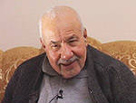

Salih Özcan (1929 - )

Salih Özcan 1929 yýlýnda Þanlýurfa’nýn Akçakale kasabasýnda doðdu. Kendisi hakkýndaki bilgileri, Necmettin Þahiner’in eserlerinden veya basýnda çýkan röportajlarýndan öðrenebiliyoruz. Bu yayýnlarda da doðum tarihi verildikten sonra doðrudan Bediüzzaman ve Risâle-i Nur’u tanýma safhasýna geçilmekte, çocukluðunu nasýl geçirdiði eðitimini nerelerde ve ne þekilde tamamladýðý belirtilmemektedir.Lise eðitimini tamamladýðý 1949 yýlýnda Salih Özcan’a Hulusi Yahyagil’in Risâle-i Nurdan parçalar okuduðunu ve Bediüzzaman’ý ziyaret etme hususunda teþvikte bulunduðunu kendi hatýralarýndan öðrenmekteyiz.
Yaz aylarýnda Emirdað’a giden Salih Özcan, bir gün dedesinden Bediüzzaman’ý ziyaret etmek için izin alýr. Önce Mehmed Çalýþkan’a gider. Çalýþkan da onu Bediüzzaman Hazretlerine götürür. Bediüzzaman Salih Özcan’ý; “Gel Seyyid Salih gel” hitabýyla karþýlayýp kucaklar. “Ben yüz binlerce seyyidi beklerken sen geldin” der. Salih Özcan, Bediüzzaman’a seyyid olup olmadýðýný sorar. Bediüzzaman; “Annem Hüseynî, babam Hasenî’dir” karþýlýðýný verir. Akabinde tebessümle, “Ben de seyyid sayýlýr mýyým?” diye sorar. Salih Özcan da, hem anne, hem baba yani çift taraftan seyyid olduðunu söyler.
Salih Özcan, sohbet sýrasýnda üniversiteyi okumak için Ýstanbul’a gitmek istediðini söyler. Bediüzzaman Hazretleri de, orada Nur Talebeleri olduðunu ve onlarla tanýþmasýný tembih eder. Bu ilk görüþmeden sonra karþýlýklý irtibat devam eder. Urfa’ya döndükten sonra Bediüzzaman’a mektup gönderir. Buna mukabil Bediüzzaman Hazretleri de bir kýsým kitap ve eþyalarý gönderir.
Salih Özcan’ýn, Ankara’da bulunduðu sýralarda önemli faaliyet ve toplantýlara katýldýðý, eski Milli Eðitim bakanlarýndan Tevfik Ýleri’nin babasý Prof. Münif Çelebi, Osman Nuri, Kemal Kalkan, Mahmud Yazýr, Nail Pertev ve Cevat Çaðrý gibi simalarla bir araya geldiði ve görüþmelerde bulunduðu bilinmektedir. Bu sohbetler ve görüþmeler sýrasýnda sýk sýk Bediüzzaman Hazretlerinin isminin zikredildiði ve övgülerde bulunulduðu görülmektedir.
Demokrat Parti iktidarý sýrasýnda Pakistan Eðitim Bakan Yardýmcýsý Ali Ekber Þah Türkiye’ye ziyarette bulunur (1952). Bu ziyaret üzerine, Tevfik Ýleri misafirle ilgilenmek üzere Salih Özcan’a haber verir. Misafirin Bediüzzaman Hazretlerini ziyaret etmek istediðini ve bu konuda da kendisine yardýmcý olmalarýný ister. Ziyaretin gizli tutulmasýný da tembihler. Kendisi Mehmet Gemalmaz ile birlikte Ali Ekber Þah’ý alarak Emirdað’a gider. Buraya vardýklarýnda Bediüzzaman’ýn kendilerini beklediklerini öðrenirler. Hemen yola çýkarlar. Böylece Pakistanlý misafirin arzusu gerçekleþir.
Bediüzzaman Hazretleri Pakistanlý misafirine özel ilgi gösterir. Risâle-i Nur ve Ýslâm dünyasý hakkýndaki düþüncelerini aktarýr. Görüþme sýrasýnda tercümanlýðý da Salih Özcan yapar. Görüþme devam ederken Salih Özcan tercümede sýkýntý çekmeye baþlar. Bunun üzerine Bediüzzaman Hazretleri çok güzel bir Arapça ifade ile sohbete devam eder. Ali Ekber Þah talebeliðe kabul edilmesini rica edince, Bediüzzaman; “Seni yirmi senelik kardaþlýða kabul ediyorum.” der. Misafir Bediüzzaman’ý Pakistan’a dâvet eder. Orada her türlü imkânýn saðlanacaðý taahhüdünde bulunur. Radyo istasyonu ve matbaanýn tahsis edileceðini söyler. Bediüzzaman ise þu karþýlýðý verir:
“Kardaþým, Ali Ekber Þah! Bu hizmetleri göðüs göðüse yapmak icap ediyor. Siperin arkasýnda hizmet olmaz. Esas hastalýk burada baþladý. Ben Mekke’de de olsam buraya gelirdim. Asýl hizmet buradadýr, cephe buradadýr.” (Son Þahitler, C. 3, s. 238).
Bu ziyaretten Ekber Þah çok memnun ayrýlýr. Ziyareti ihsan ettiði için Cenâb-ý Hakk’a þükreder. Bediüzzaman eserlerini ona hediye eder. Salih Özcan, ayrýlýþtan sonra misafire, Bediüzzaman hakkýndaki fikrini sorar. O da, “Bu zat sýrf Kur’ân’dan konuþuyor. Bu kadar fasih ve belið olarak Kur’ân lisanýný konuþan sadece bu zatý gördüm.” karþýlýðýný verir. Ýkinci kez Bediüzzamanla görüþmek ister. Ancak, Bediüzzaman’ýn kabul edemeyeceði haberini alýrlar. Ekber Þah çok üzülür. Emirdað’dan otobüsle ayrýlacaklarý zaman uðurlamaya gelen Bediüzzaman’ý görmeleri kendileri için çok büyük bir sürpriz olur. Bediüzzaman misafirinin yanýna oturup yedi sekiz kilometre kadar beraber gider. Misafir bir kese altýn ve ipek kumaþ hediye etmek istediyse de Bediüzzaman kabul etmez. Ali Ekber Þah Pakistan’a döndükten sonra ülkesinde övgü dolu ifadeler kullanýr. Basýna verdiði demecinde Nur talebelerinden övgüyle söz ettiði gibi, “Risâle-i Nur, Kur’ân’ýn tercümanýdýr” ifadelerini kullanýr.
Salih Özcan, Bediüzzaman ve Risâle-i Nurla baðýný devam ettirir. 1954 yýlý yazýnda bir dað yürüyüþünde bulunurlar. Bediüzzaman Hazretleri, Özcan’a, kendisi dahil kabrinin kimse tarafýndan bilinmeyeceðini, Urfa’da Halilullah civarýnda ölmek istediðini söyler. Bu söyledikleri Mustafa Acet tarafýndan kayda geçirilir. Yine bir görüþme sýrasýnda, Menderes çok münafýktýr deyip aleyhinde konuþan Salih Özcan’a, Bediüzzaman Hazretleri, “Sus, keçeli! Menderes’e böyle deme. O çok hizmet etmek istiyor. Fakat mani olanlar var.” ikazýnda bulunur. Bediüzzaman Hazretleri, Halk Partisinin iktidara gelmemesi için Menderes’in desteklenmesi gerektiðini sözlerine ilâve eder.
Bediüzzaman Hazretleri Salih Özcan’a iltifatlarda bulunduðu gibi, Urfalýlara da iltifatlarda bulunmuþ ve övgülerini yazmýþtýr; “Cenâb-ý Hakk’a hadsiz þükrediyorum ki, Seyyid Salih gibi gençliðin bir kahramaný ve o havalinin çok kýymetdar ve hamiyetkâr ve dindar iki milletvekili Nurlara sahip çýkmaya baþladýlar. Ben de kendi paramla aldýðým ve zehir hastalýðýnýn fazla rahatsýzlýðý içinde tashih ettiðim bana mahsus bir kýsým mecmualarýmý onlara gönderiyorum… Seyyid Salih ve hamiyetkâr milletvekilleri orada inþaallah Kur’ân ve imana tam hizmet edecek ve orayý Isparta’daki Medresetü’z-Zehra ve Mýsýr’daki Cami‘ü’l-Ezher’in küçük bir nümunesi haline getirmeye vesile olmaya ve Þam ve Baðdat’taki medrese-i Ýslâmiyenin bir nümunesini açmaya yol açmalarýný rahmet-i Ýlâhiyeden ümit ediyoruz… Bütün Urfa halkýna, çoluk ve çocuðuna ve mezarda yatanlarýna her sabah duâ ediyorum. Ve bütün Urfalýlara selâm ediyorum. Urfa taþýyla, topraðýyla mübarektir. Ben çok hastayým. Onlar da bana duâ etsinler.” (Emirdað Lahikasý, s. 407).
Bediüzzaman ve Risâle-i Nur hizmetinde bulunan Salih Özcan, daha sonraki dönemde de hizmet ve yardýmlarýný devam ettirdi. Basýn yoluyla Risâle-i Nur camiasýna yapýlan saldýrýlar sürekli bir þekilde devam etmekte ve bunlara karþý yine basýn yoluyla mücadelede elde bir yayýn organý olmadýðýndan dolayý, büyük sýkýntý çekilmekteydi. Zübeyir Gündüzalp bir gazetenin çýkarýlmasý için büyük bir gayret göstermekte ancak, maddî imkânsýzlýk yüzünden gayesine ulaþamamaktaydý. Durumu Salih Özcan’a da aktarýnca maddî destek sözü aldý. “Ýttihat Gazetesi” haftalýk olarak neþredilmeye baþlandý. Ýmtiyaz sahibi Salih Özcan, Yayýn Müdürü Mustafa Polat idi. Maddî desteði saðlayan Salih Özcan idareye karýþmayacaktý. Böylece Zübeyir Gündüzalp’in önderliðinde yeni alana adým atýlmýþ olmaktaydý.
Ticaretle uðraþan, bir ara “Hilal” adlý dergiyi neþreden ve sahipliðini yapan Salih Özcan, aktif siyasette de bulundu. 1977 yýlýnda Þanlýurfa’dan seçilerek Meclise girdi. Bunlarýn dýþýnda Faisal Finans’ýn kuruculuk ve yöneticiliðini, FEY Vakfý Mütevelli Heyeti Baþkanlýðýný yaptý.